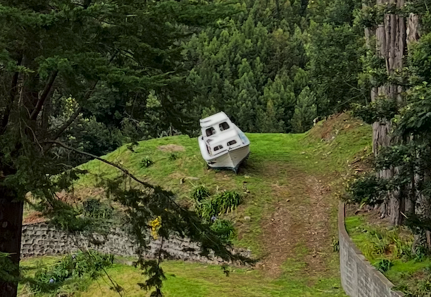
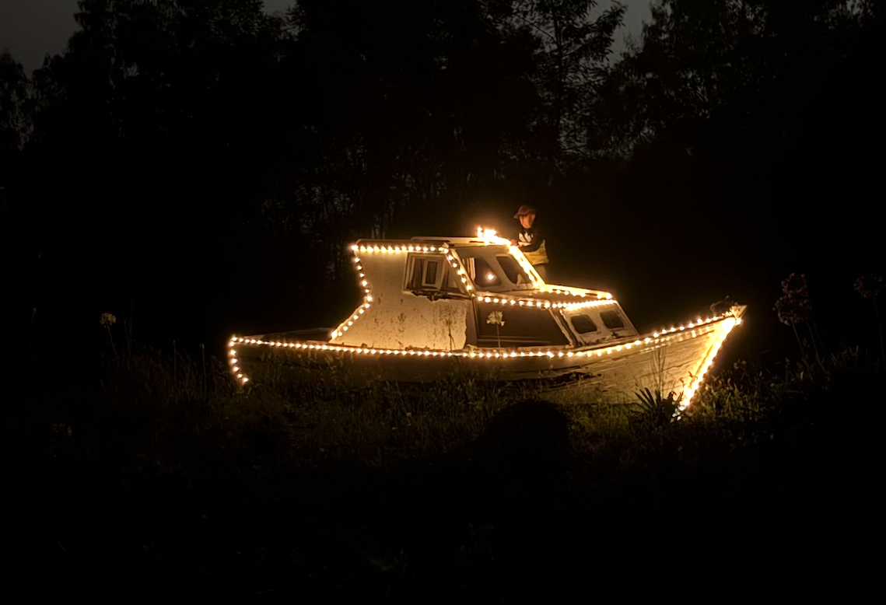
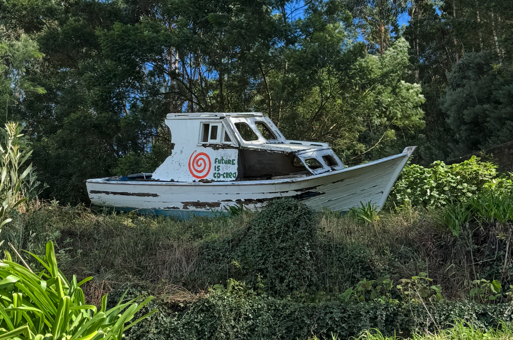
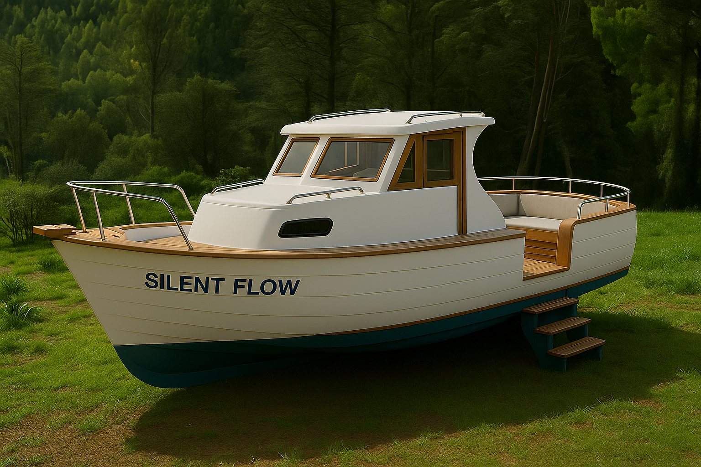
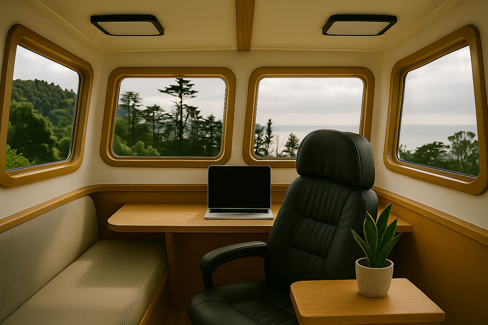

SPIRAL PARK · MADEIRA
New life for an old boat
At an altitude of 650 meters above sea level, among pine trees and wind, stands an old boat.
No one knows how it got here.
Maybe it was washed ashore by the storm of time.
Maybe it simply grew tired of the ocean and decided to rest.

A little worn, but still beautiful.
It carries the feeling that you are standing at the edge of worlds —
between land and water, sky and earth, work and dream.
We decided to give it a new life — to renovate the boat and turn it into a
sanctuary workspace, a place to work, to be silent, to feel yourself the
captain of your own life.
It will become an art object, where inspiration meets stillness.




SUSTAINABLE CREATION
This project perfectly reflects our philosophy of conscious and efficient use of resources.
We would hardly have dared to build a dedicated workspace from scratch — but life offered us a gift: the boat was already here, solid and waiting to be awakened.
INVESTMENT NEEDED
€6,000
To renovate the boat and transform it into a sanctuary workspace — a place to work, to be silent, to feel yourself the captain of your own life.
That's all it takes to turn an old hull into a living space.

This is not just a renovation —
it's a vessel for
silence, stillness & inspiration.